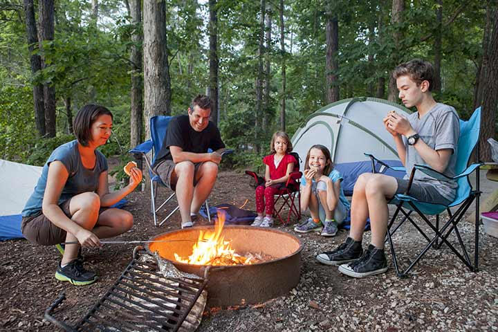
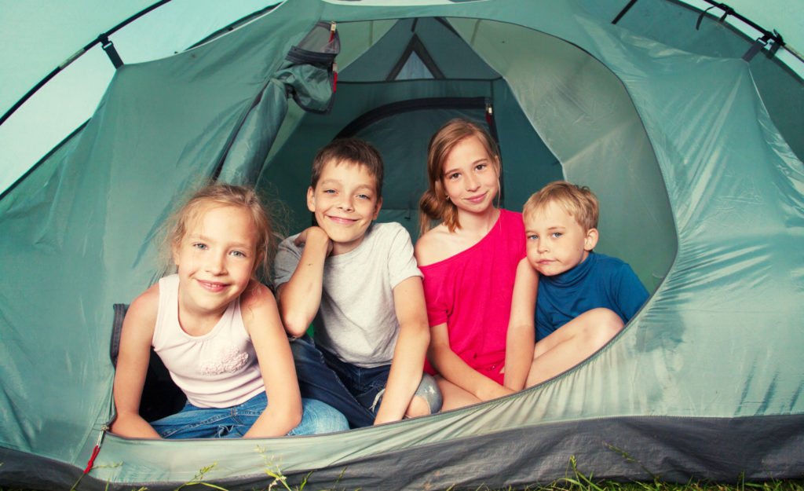

<link rel='stylesheet prefetch' href='https://cdnjs.cloudflare.com/ajax/libs/meyer-reset/2.0/reset.min.css'>
<link rel='stylesheet prefetch' href='https://cdnjs.cloudflare.com/ajax/libs/font-awesome/4.4.0/css/font-awesome.min.css'>
<link rel="stylesheet" href="../stylesheets/style.css">
<link rel="stylesheet" href="../stylesheets/style2.css">
<link rel="stylesheet" href="../stylesheets/carousel.css">

<script src='http://cdnjs.cloudflare.com/ajax/libs/jquery/2.1.3/jquery.min.js'></script>
<script src='https://cdnjs.cloudflare.com/ajax/libs/jquery-mobile/1.4.5/jquery.mobile.min.js'></script>
<script src="../js/timeline.js"></script>
<script src="../js/carousel.js"></script>

<section class="cd-horizontal-timeline">
	<div class="timeline">
		<div class="events-wrapper">
			<div class="events">
				<ol>
					<li><a href="#0" data-date="16/01/2014" class="selected">Camping Trip</a></li>
					<li><a href="#0" data-date="28/02/2014">Baseball </a></li>
					<li><a href="#0" data-date="05/04/2014">Pumpkin Carving</a></li>
					<li><a href="#0" data-date="20/05/2014">Park Trip</a></li>
					<li><a href="#0" data-date="09/07/2014">2013</a></li>
					<li><a href="#0" data-date="30/08/2014">2014</a></li>
					<li><a href="#0" data-date="15/09/2014">2015</a></li>
					<li><a href="#0" data-date="01/11/2014">2016</a></li>
				</ol>

				<span class="filling-line" aria-hidden="true"></span>
			</div> <!-- .events -->
		</div> <!-- .events-wrapper -->
			
		<ul class="cd-timeline-navigation">
			<li><a href="#0" class="prev inactive">Prev</a></li>
			<li><a href="#0" class="next">Next</a></li>
		</ul> <!-- .cd-timeline-navigation -->
	</div> <!-- .timeline -->

	<div class="events-content">
		<ol>
			<li class="selected" data-date="16/01/2014">
				<h2>Awesome Camp Trip</h2>
				<em>4th Grade trip</em>
				<p>	
					<div class="slideshow-container">
						<div class="mySlides fade">
							<div class="numbertext">1 / 3</div>
								
							<div class="text">Mentors preparing meals for the children.</div>
						</div>
					<div class="mySlides fade">
						<div class="numbertext">2 / 3</div>
							
						<div class="text">It was cold at night.</div>
					</div>

					<div class="mySlides fade">
						<div class="numbertext">3 / 3</div>
							
						<div class="text">Kids posing.</div>
					</div>

					<a class="prev" onclick="plusSlides(-1)">&#10094;</a>
					<a class="next" onclick="plusSlides(1)">&#10095;</a>
					</div>
					<br>

					<div style="text-align:center">
						<span class="dot" onclick="currentSlide(1)"></span> 
						<span class="dot" onclick="currentSlide(2)"></span> 
						<span class="dot" onclick="currentSlide(3)"></span> 
					</div>

				    <div id = "text">
					The 4th graders went on a camping trip with one another. They developed skills in teamwork, leadership, and survival. In addition, an appreciation for what we already have was developed from the harsh conditions while camping. Many students reported they would be interested in future camping trips and had a positive experience.
					</div>
				</p>
			</li>

			<li data-date="28/02/2014">
				<h2>Baseball</h2>
				<em>7th Graders vs 8th Graders</em>
				<p>
				
				The 7th and 8th graders duked it out in a close game of baseball. The 8th graders pulled ahead early, but the 7th graders made a comeback towards the end to secure the victory. Today the younger children are victorious over the older and more seasoned students here at Woods Family Foundation!
				</p>
			</li>

			<li data-date="05/04/2014">
				<h2>Pumpkin Carving</h2>
				<em>5th Graders Learn Carving</em>
				<p>
					
					5th graders gathered today after class to carve pumpkings with mentors! Knives and proper safety was taught to all participating students. Many cute and adorable pumpkins were carved! Alicia carved the best pumpkin and won a gift card
				</p>
			</li>

			<li data-date="20/05/2014">
				<h2>Park Trip</h2>
				<em>Children walk around park</em>
				<p>	
					
					Today we escaped the confines to enjoy the beautiful Chicago weather! Children walked and several rounds of icebreakers were played between children. Hard to beat new friendships, good weather, and the beautiful weather Chicago has to offer!
				</p>
			</li>
		</ol>
	</div> <!-- .events-content -->
</section>